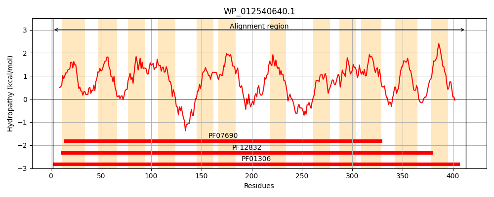
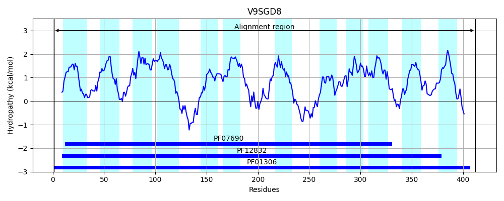
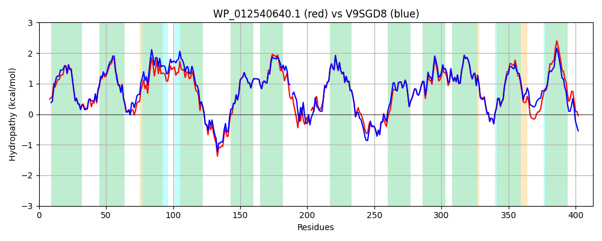

Hit Accession: V9SGD8
Hit TCID: 2.A.1.5.6
Hit Description: gnl|BL_ORD_ID|20546 gnl|TC-DB|V9SGD8|2.A.1.5.6 Sugar transporter OS=Escherichia coli OX=562 GN=RCS78_P0228 PE=4 SV=1
Mach Len: 413
e:0.000000
Query TMS Count : 12
Hit TMS Count: 12
TMS-Overlap Score: 11.200000
Predicted Substrates:CHEBI:50699;oligosaccharide
BLAST Alignment:
Score: 1798 , Bit scores: 697 bits, E-value: 0.0e+00, Alignment length: 413, Percentage identity: 84
Query: 2 MKAHHSHSYPLLSALLFFFFVTWSSSGSLLSIWLHQEVGLKAGDTGIIYAVLSVSALFAQVCYGFIQDKLGLRKHLLWYITALLILSGPAYLLFGHLLKINVLLGSIFGGIYIGLTFNGGIGVLESYTERVARQSQFEFGRARMWGSLGWAVATFFAGLLFNINPQLNFLVASCSGLVFFILLARLRVSSAPHAMQEAVSGG-KVTLEDALRLLTLPRFWALVFFVIGTCIYGVYDQQFPVYFSSQFATLQEGNEMYGYLNSFQVFLEAAGMFCAPWLVNRIGAKNGLIFAGMVMAMRMVASGLVEGPLLISITKLLHAVELPILLVAIFKYNSINFDKRLSSTLYLVGFACTSSIIASVLSPLAGYSYEKYGFAQSYLIMGLLVFCTTFISIFLLRSGKSSADPLVSQPTAI 413
MK + SY LLSALLFFFFVTWSSS SLLSIWLHQEVGLKA +TGII++VLSVSALFAQVCYGFIQD+LGLRKHLLW ITALLILSGPAYLLF +LL +N+LLGS+FGG++IGLTFNGGIGVLESYTERVARQS FEFGRARMWGSLGWAVATFFAGLLFNINP LNFLVASCSGL+FF LLARL+V +AP +M++ G KV+LEDALRLLTLPRFWAL+FFV+GTCIYGVYDQQFPVYFSSQF TL+EGNEM+GYLNSFQVFLEAAGMFCAPWLVNRIGAKNGLIFAGMVMA+RM+ASGLVEGPLLISITKLLHAVELPILLVAIFKYNS+NFDKRLSST+YLVGFACTSS+I +VLSPLAG+SYE++GFAQSYLIMG++VF TTFISIFLLRS KSS++P Q A+
Sbjct: 1 MKKRPTRSYMLLSALLFFFFVTWSSSSSLLSIWLHQEVGLKASETGIIFSVLSVSALFAQVCYGFIQDRLGLRKHLLWLITALLILSGPAYLLFSYLLSVNILLGSVFGGLFIGLTFNGGIGVLESYTERVARQSTFEFGRARMWGSLGWAVATFFAGLLFNINPDLNFLVASCSGLIFFCLLARLKV-AAPASMEKLEIGAKKVSLEDALRLLTLPRFWALIFFVVGTCIYGVYDQQFPVYFSSQFPTLREGNEMFGYLNSFQVFLEAAGMFCAPWLVNRIGAKNGLIFAGMVMALRMIASGLVEGPLLISITKLLHAVELPILLVAIFKYNSLNFDKRLSSTIYLVGFACTSSVIGTVLSPLAGFSYERFGFAQSYLIMGIMVFSTTFISIFLLRSTKSSSEPSFLQQKAV 412 | Protein Hydropathy Plots: |
|---|
|  |  |
Pairwise Alignment-Hydropathy Plot:
|
|---|
|  |